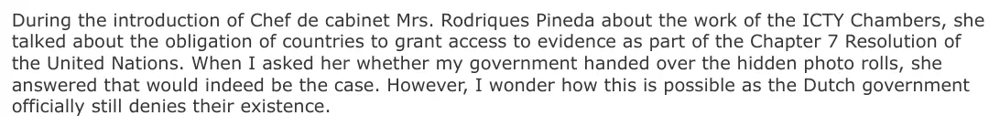

Prueba · Correo electrónico
Giltay a la Fiscalía del TPIY, 24 de septiembre de 2017
El pasaje
«Durante la presentación de la jefa de gabinete, la señora Rodriques Pineda, sobre la labor de las Salas del TPIY, ella habló de la obligación de los países de dar acceso a las pruebas como parte de la resolución del capítulo 7 de las Naciones Unidas. Cuando le pregunté si mi Gobierno había entregado los rollos de película ocultos, respondió que efectivamente así sería. Sin embargo, me pregunto cómo es posible, ya que el Gobierno neerlandés sigue negando oficialmente su existencia». Página 1, el párrafo inmediatamente anterior a la pregunta final. El nombre aparece aquí como «Rodriques Pineda» y en la respuesta del tribunal del 3 de octubre de 2017 como «Rodrigues Pineda»; ella misma escribe «Rodríguez Pineda». Traducido del inglés; el texto original figura a continuación.
Texto original
“During the introduction of Chef de cabinet Mrs. Rodriques Pineda about the work of the ICTY Chambers, she talked about the obligation of countries to grant access to evidence as part of the Chapter 7 Resolution of the United Nations. When I asked her whether my government handed over the hidden photo rolls, she answered that would indeed be the case. However, I wonder how this is possible as the Dutch government officially still denies their existence.” El correo electrónico está escrito en inglés.

Por qué importa este documento
Esta es la pregunta que Giltay planteó al TPIY sobre los rollos de película. En virtud de la resolución 827, aprobada en el marco del capítulo VII de la Carta de las Naciones Unidas, todos los Estados, incluidos los Países Bajos, debían cooperar plenamente con el tribunal y atender sus solicitudes de asistencia y cumplir sus órdenes.
Giltay escribió el correo electrónico la noche de una jornada de puertas abiertas del TPIY. En él contaba que la jefa de gabinete había hablado de esa obligación de dar acceso a las pruebas y que, a su pregunta, había respondido que los Países Bajos habrían entregado efectivamente los rollos ocultos. Se preguntaba cómo era posible, ya que el Gobierno neerlandés seguía negando oficialmente su existencia. Al fin y al cabo, según la versión oficial, el revelado del rollo del oficial del Dutchbat Johannes Rutten había salido mal. Giltay terminaba preguntando si la Fiscalía había exigido alguna vez acceso a los rollos de película, al menos ocho, que, según el abogado Michael Ruperti, se requisaron a militares del Dutchbat y se encuentran en archivos del servicio de inteligencia militar en los Países Bajos.
Procedencia
- Documento
- Correo electrónico, dos páginas, impreso desde la cuenta de Gmail del remitente
- Remitente
- Edwin Giltay, escritor, www.thecoverupgeneral.com
- Destinatario
- La Fiscalía (Office of the Prosecutor) del Tribunal Penal Internacional para la ex-Yugoslavia (TPIY). El mensaje se envió a un miembro del personal del tribunal, con la petición de reenviarlo al fiscal
- Copia a
- Cuatro destinatarios, cuyos nombres y direcciones están tachados en este PDF
- Fecha
- 24 de septiembre de 2017, 22:20
- Asunto
- «Obligation to hand over evidence as part of the chapter 7 resolution» (obligación de entregar pruebas como parte de la resolución del capítulo 7); en el correo electrónico, escrito con c minúscula
- Respuesta
- La Fiscalía respondió el 3 de octubre de 2017 que no tenía conocimiento de los ocho rollos de película
- Referencias
- El litigio que, según el correo electrónico, más de doscientos veteranos del Dutchbat, representados por el abogado Michael Ruperti, mantenían contra el Estado neerlandés, en el que reclamaban, entre otras cosas, la devolución de sus fotos; el despacho de la agencia ANP del 28 de noviembre de 2016 en ThePostOnline sobre más rollos de película de Srebrenica en los archivos del MIVD; la decisión unánime de la Comisión Permanente de Defensa del 14 de septiembre de 2017 de que la ministra de Defensa debía dar respuestas; la jornada de puertas abiertas del TPIY del 24 de septiembre de 2017
- Idioma
- Inglés
- Conservado por
- Edwin Giltay, el remitente
- Véase también
- Resolución 827 del Consejo de Seguridad de las Naciones Unidas, 25 de mayo de 1993
Citado en: el ensayo «La prohibición cayó, el libro quedó en pie» en el capítulo (4) «Un encubrimiento de dimensión internacional» y en la diapositiva «Tribunal para la ex-Yugoslavia · 2011–2017» de la presentación «La historia en el mapa».
Ficha de prueba: https://
Documento: https://
Modificado por última vez el 28 de agosto de 2026, consultado el 27 de noviembre de 2026.

Esta página es una ficha de prueba del libro El general del encubrimiento de Edwin Giltay y del sitio web que lo acompaña.